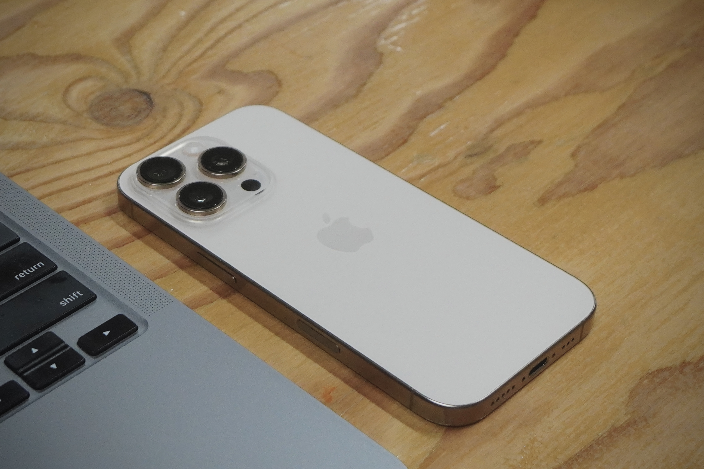

3D スキャナー
EinScan Pro HD。高精度な形状取得が可能な業務用ハンドヘルドスキャナー。
iPhone
LiDAR センサーを活用した広範囲スキャン。屋外や大型対象物に対応。
3D プリンター
Prusa / Formlabs。FDM・SLA 両方式で機能部品から精密造形まで対応。
UV・レーザー加工機
Roland LEF-12i（UV）、Trotec Speedy 300（レーザー）。グッズ制作の中核機材。

EinScan Pro HD や iPhone の LiDAR センサーを用いて、文化財・建造物・自然物などを高精度に3Dスキャンします。
取得したデータはデジタルアーカイブとして保存し、閲覧・計測・再利用が可能な形で管理します。
3D スキャナー

EinScan Pro HD — 精密部品から人体まで対応。点群密度が高く、後処理も容易。
iPhone

iPhone LiDAR — 広範囲スキャンや屋外対応。機動性が高く現場での即時確認が可能。

スキャンデータを活用し、3Dプリンター・レーザー加工機・UVプリンターで地域オリジナルグッズを制作。販売による収益獲得と認知拡大を同時に目指します。
3D プリンター

Prusa / Formlabs — FDM・SLA 両方式。複製品や展示用モデルの出力に対応。
UV・レーザー加工機

Roland LEF-12i・Trotec Speedy 300 — アクリルキーホルダー・彫刻品など多様なグッズ制作が可能。

グッズ販売で得た収益を、スキャンデータの維持・更新・管理費用に充てます。外部補助金に依存しない自走型の体制を構築し、地域資産を長期的に守り続けることを目指します。

蓄積した3Dデータは、グッズ制作にとどまらず幅広いサービスへ転用できます。
・Web 公開 — 観光・文化財紹介サイトへの埋め込み表示
・AR / VR — スマートフォンや HMD を使った体験型コンテンツ
・設計・修復支援 — 精密な寸法データとして建築・修復現場で活用
・教育・研究 — 学校や大学との連携、学術資料としての提供
・映像・CG 制作 — 映像作品やプロモーションへの3Dモデル提供
一度記録したデータは何度でも再利用できるため、初期投資に見合った長期的な価値を生み出し続けます。